Мебель своими руками в Visio 2003.
 Обычно при черчении планов зданий часто используются трафареты входящие в состав поставки Microsoft Visio. И часто в эти планы зданий входит различная мебель. К примеру, стол со стульями. В трафаретах Visio можно встретить различные столы со стульями, квадратные столы, круглые, овальные. И упущением данных фигур является жесткое закрепление количества стульев и их положение.
Обычно при черчении планов зданий часто используются трафареты входящие в состав поставки Microsoft Visio. И часто в эти планы зданий входит различная мебель. К примеру, стол со стульями. В трафаретах Visio можно встретить различные столы со стульями, квадратные столы, круглые, овальные. И упущением данных фигур является жесткое закрепление количества стульев и их положение.
Значит надо сделать такой стол со стульями, который обладал бы наибольшей гибкостью.
Для начала нужно создать универсальный стол. Чтобы создать универсальный стол, надо собрать возможное количество вариаций форм стола и свезти к минимуму различные их формы. Дополнительно было бы неплохо сделать так, чтобы отображались размеры данного стола, и положение данных размеров также можно было бы изменять.
С требованиями к столу понятно. Переходим к стульям. Стульев, к примеру, будет от одного до четырех. Стулья должны располагаться с разных сторон и в разных положениях. Для П-образного стола этих положений для четырех стульев будет 8 различных вариантов.
Итак, исходными фигурами будут служить две фигуры. Одна будет играть роль столешницы, вторая стул. Только нужен стул со спинкой, и желательно, чтобы одной фигурой, для удобства. Стулья тоже могут быть разные. Тут уже всё зависит от вас.
Делаем столу размеры.
Создадим простой прямоугольник, который будет столом с размерами, скажем, 1,6 м на 0,8 м. Теперь надо отобразить эти размеры в самой фигуре. Для этого делаем вставку поля.
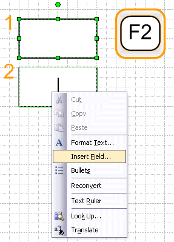
И вводим формулу =FORMATEX(Width,"0","m","cm")
Затем ставим значок Х и повторяем операцию с другой формулой =FORMATEX(Height,"0","m","cm")
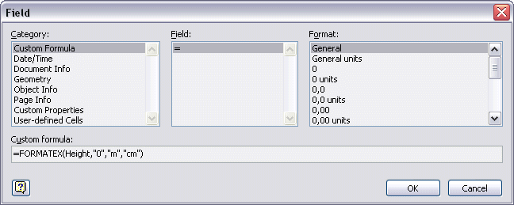
Изменяя размеры фигуры, записанные значения в фигуру тоже будут изменяться.
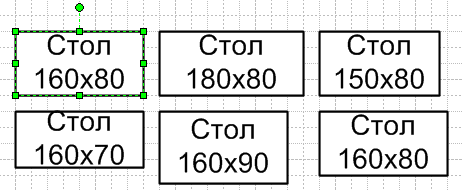
Теперь надо сделать точку управления надписью. Для этого надо создать в ТаблицеФигур (ShapeSheet) раздел Элементы управления (Controls). Потом надо сместить надпись относительно фигуры.
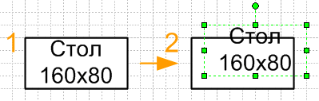
Делается это инструментом текстового блока (Ctrl+Shift+4), чтобы в ТаблицеФигур (Shapesheet) появился раздел Трансформация текста (Text transform).
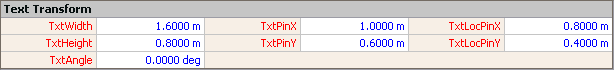
И вносим изменения в этот раздел.
В ячейку TxtPinX
Значение: =Controls.Row_1
В ячейку TxtPinY
Значение: =Controls.Row_1.Y
И перемещаем текст, используя точку управления, в центр фигуры.
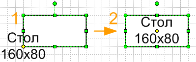
Делаем стулья столу.
Сначала надо сделать стулья. Самый просто способ, это взять две фигуры(1), применить команду Фрагментация (Fragment)(2), потом объединить части спинки (3), и применить команду Присоединение(Join)(4), потом залить цветом(5) и все. Стул готов.
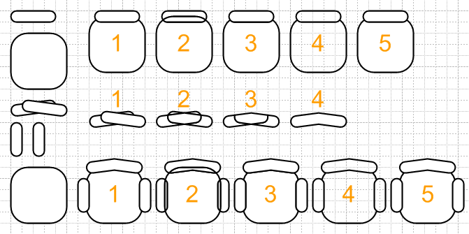
Для того, чтобы размещать стулья у стола, есть несколько способов, но самый простой способ, при котором 1 стул и 2 стула – это разные одиночные фигуры. Т.е. надо взять 2 стула и снова применить к ним команду Присоединение (Join).
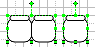
Теперь надо из стола сделать группу. Для этого в меню выбираем Фигура>Группировка>Конвертировать в группу (Shape>Grouping>Convert to Group).
Итак, открываем группу стола, размещаем фигуры, как показано на рисунке. Т.е. один "двойной" стул и "одинарный" с одной стороны и тоже самое с другой.
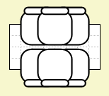
Введение формул.
Необходимо сначала внести изменения в ТаблицуФигур(ShapeSheet) стола. Заходим в неё и создаем разделы Ячейки пользователя (User-defined cells) и Действия (Actions) и вносим изменения в ячейки.
Раздел Ячейки пользователя (User-defined cells): создаем вторую стоку.
Ячейка Prompt строка 1.
Значение: Кол-во стульев
Ячейка Prompt строка 2.
Значение: Положение
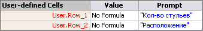
Раздел Действия (Actions)
Ячейка Actions.Row_1.Action
Значение: =SETF("User.Row_1",1)
Ячейка Actions.Row_1.Menu
Значение: ="1 стул"
Ячейка Actions.Row_2.Action
Значение: =SETF("User.Row_1",2)
Ячейка Actions.Row_2.Menu
Значение: ="2 стула"
3-я и 4-я строка по аналогии.
Ячейка Actions.Row_5.Action
Значение: =SETF("User.Row_2",NOT("User.Row_2"))
Ячейка Actions.Row_5.Menu
Значение: ="Изменить положение"
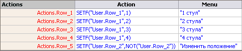
Теперь разберемся со стульями. Для начала составим таблицу, когда должен появляться какой стул.
| Ячейка-значение\Фигура |
1 стул сверху |
1 стул снизу |
Двойной стул сверху |
Двойной стул снизу |
| Row_1=1,Row_2=0 | 1 | 0 | 0 | 0 |
| Row_1=1,Row_2=1 | 0 | 1 | 0 | 0 |
| Row_1=2,Row_2=0 | 0 | 0 | 1 | 0 |
| Row_1=2,Row_2=1 | 0 | 0 | 0 | 1 |
| Row_1=3,Row_2=0 | 1 | 0 | 0 | 1 |
| Row_1=3,Row_2=1 | 0 | 1 | 1 | 0 |
| Row_1=4 | 0 | 0 | 1 | 1 |
Первый стул сверху.
Сначала надо создать раздел Ячейки пользователя (User-defined cells). И внести в них ссылку на ячейки того же раздела у группы.
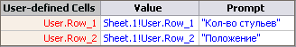
Если в ТаблицеФигур (ShapeSheet) содержится несколько разделов Геометрия(Geometry), то надо сделать ссылку ячеек GeometryN.NoShow на Geometry1.NoShow.
Далее вносим изменения в ячейку Geometry1.Noshow
Значение: =NOT(OR(AND(User.Row_1=1,User.Row_2=0),AND(User.Row_1=3,User.Row_2=0)))
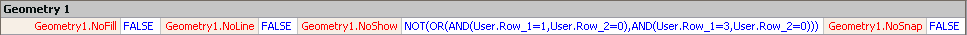
Как видите, формула была взята, на основании данных таблицы. Остальные формулы стульев также были составлены, используя таблицу истинности. Составляется она очень просто. Берутся значения, в которых данная фигуры должна быть видна, записываются значения контролируемых ячеек через функцию AND (логическое И), а объединяются эти значения функцией OR (логическое ИЛИ). В принципе можно вывести и более короткую формулу, но данный способ очень нагляден и прост.
Первый стул снизу.
Тоже делаются ссылки раздела Ячейки пользователя (User-defined cells), тоже делаются ссылки ячеек раздела ГеометрияN (GeometryN) на ячейку Geometry1.NoShow и в нее вносится соответствующая запись.
Значение: =NOT(OR(AND(User.Row_1=1,User.Row_2=1),AND(User.Row_1=3,User.Row_2=1)))
Двойной стул сверху
Все тоже самое и дополнительно свои данные в ячейку Geometry1.NoShow.
Значение: =NOT(OR(AND(User.Row_1=2,User.Row_2=0),AND(User.Row_1=3,User.Row_2=1),AND(User.Row_1=4)))
Двойной стул снизу
Последние изменения и снова своя формула в ячейку Geometry1.NoShow.
Значение: =NOT(OR(AND(User.Row_1=2,User.Row_2=1),AND(User.Row_1=3,User.Row_2=0),AND(User.Row_1=4)))
Вот и все. Фигура в целом готова и полностью функциональна.
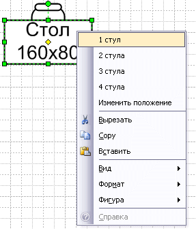
Дополнительно можно сделать, чтобы выбранный пункт меню исчезал или был отмечен, но это уже всё тонкости и дело вкуса.
Примерно такую же схему поведения можно применить и к другим фигурам. К фигуре машины, например.
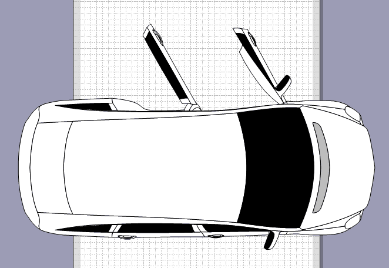
Статьи: 1 2 3 4 5 6 7 8 9 10 11 12 13 14 15 16 17 18 19 20 21 22 23 24 25 26 27 28 29 30
В начало раздела
Автор: Ничков Алексей (a.k.a. Digitall)